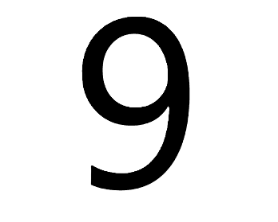
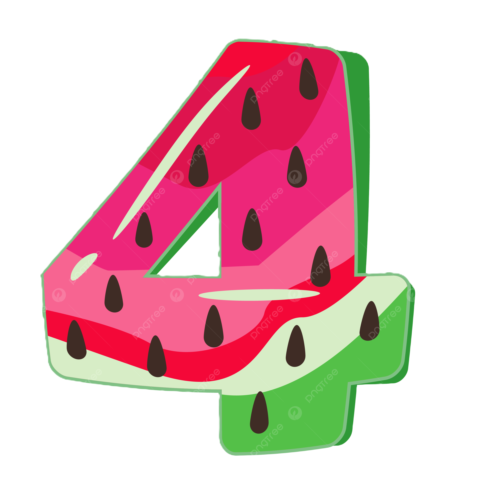
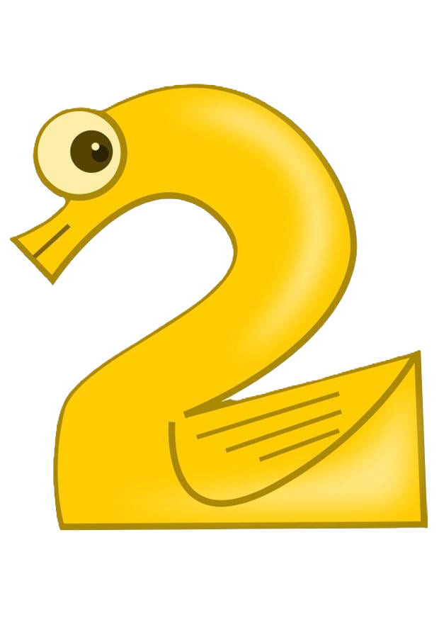

Ranking Numbers 1-10
These rankings are based on this popular youtube video
6
In last place we have the number 6. Some of the reasonings
behind this are because it's an unlucky number that is associated with the
devil.
Another reason behind this is
because there are just objectivly better numbers. Number 6's base components are 3 and 2 which put it
down to
ten because of it's unoringinality. This number is also so funky looking so...

4
In 9th place we have number 4. This is another unlucky number.
In chinese it sounds similiar to word for death which is why it's regarded as an
unlucky number. It's
components are 2 so it's not as bad as 6 but has some unoringinality. it'a a pretty fun number besides
that being
associated with squares and rectangles.
1
In 8th place we have number 1. 1 is considered a lucky number
being related to self. I put it in 8th because number 1 is kinda basic. Though
it being the first number put it above
other numbers. It's not used a lot by itslef in multiplication and division. Also 1 is the lonliest
number.
9
In 7th place we have number 9. This is another lucky number
being associated with longevity and good fortune. This number also happens to be
an unlucky number in addition to lucky because in Japanese it's similiar to the word for suffering.
Number 9 isn't too original
becasue it's components are 3 but it does have
interesting multiplication habitis. This number is also similiar to number 6 in the way it looks so
that's why it's in 7th.
3
In 6th place we have number 3. Number 3 is a lucky number
associated with
creativity, communication, and self-expression. This also a prime number so in the origniality catergory
it's pretty high. Number 3 is also associated with triangles making it higher on the ranking.
10
In 5th place we have number 10. Number 10 is a huge deal in
math with it being
used in simplifying numbers. It's also the easiest number to multiply with. It isn't to most original
with it's components being 2 and 5 because of this I put it in 5th.

7
In 4th place we have 7. 7 is a lucky number being associated with
perfection.
This number is also a prime number. I think this is a really unique number and we us it to represent the
amount of days in a week. 7 is one of the most used lucky numbers. I put it in 4 because it's so unique
but
I still think it falls short to others.
8
In 3rd place we have number 8. it's a lucky number that
repreesents wealth.
Number 8 isn't the most unique with it's components being 2 and 4 but having these 2 numbers be it's
components make it an interesting number in math. The reason though it's in 3rd is because 8 uses the
same symbol as infinty. it's design is also really unique compared to other numbers.

5
In 2nd place is number 5. Number 5 is a great number in math
being the second
easiest to use in multiplication. Number 5 also is a prime number giving it uniqueness. 5 is a great
number to use and has a great design though it's similiar to 2's design.
2
In 1st place we have number 2. Number 2 is a prime number.
Number 2 is the best
number because of it's use. A lot of thing come in 2s like socks and shoes. Also in math every even
number is divisible by 2. It's also unique because it's the only number that has the same result when
you multiply it by itself and when you add it to itself. I think because of it's uniqueness, use in
math, and use in the world it's the best number.
Here's the Recap
- 2
- Prime Number
- Great in math
- Used everday
- unique
- 5
- Prime Number
- Great in Math
- unique
- 8
- unique
- interesting in math
- result of 2 and 4
- 7
- Prime Number
- Unique
- Lucky Number
- 10
- Great in math
- Result of 2 and 5
- Used a lot for simplifying Math
- 3
- Prime Number
- Lucky Number
- Unique
- 9
- Lucky Number
- Interesting in math
- Result of 3
- Unlucky Number
- 1
- Unique
- lucky Number
- 4
- Unlucky Number
- Result of 2
- Good in Math
- 6
- Unlucky Number
- result of 2 and 3
Here's Some Bonus Content From Tableau: